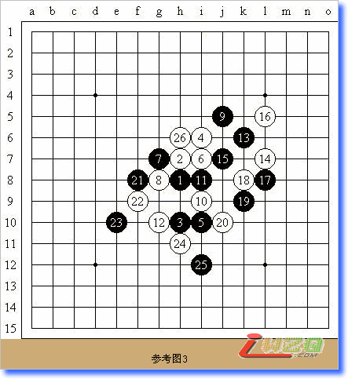

简评第45期日本名人战
#1 简评第45期日本名人战 作者：有志青年 发表时间：2007-10-15 17:24:08
第45期全日本连珠名人战东海地区第一次预选赛于2007年4月15日举行，由此拉开了2007年第45期全日本名人战的序幕。
首先是各地选拔赛【东日本 东海 关西·北陆 中国·四国 九洲】
之后是各地选拔出来的选手参加A级挑战者决定战
河村典彦九段 山口釉水 九段 冈部宽 七段 佐藤清富六段
矶部泰山九段 三好丈夫八段 饭尾义弘七段 贺茂 雪五段
松浦 浩七段 樋渡喜久磨五段
最终山口釉水九段获得挑战上届名人长谷川一人的资格
于2007年10月13日开始了名人位挑战对局五番胜负
长谷川名人自认为：34、43、44期均取得了名人位，45期也是理所当然。
山口九段坦言：由于长谷川最近对局的机会不多，所以作为专家在对抗中会略显轻松。
以上文字根据励精教室信息整理。
本贴将汇总转载上海连珠网【中华连珠网】顾炜老师对此次名人赛所做的简评
#2 简评第45期日本名人战首局 作者：有志青年 发表时间：2007-10-15 17:33:24
10月13日，第45期全日本连珠名人战五番棋战首局在神户市举办。由挑战者权赛优胜、第10届世锦赛A组季军山口釉水九段向在位名人长谷川一人九段发起挑战。
这项比赛是日本国内最高级别的赛事。一度甚至被视为全世界最高级别的连珠赛事。在这项比赛中出现的各种走法会迅速流行，甚至成为定式。可以说，这项赛事的成功举办，不仅造就了日本几代优秀的连珠棋手，也为世界各地的棋手迅速成长提供了促进剂，同时也极大地丰富了连珠的技术成果。可惜随着进入21世纪，尤其是当中村茂九段宣布不再卫冕名人头衔之后，这项赛事逐渐使人有种鸡肋的感觉。双方的对局不是毫无新意，就是频繁出错，令人遗憾。
山口这次作为挑战者，我是很希望能看到有股清新的风吹进沉闷的氛围。毕竟山口还是一位愿意接受新技术并投入研究的大师级棋手。首局由长谷川布局接受山口的挑战。长谷川近来对瑞星似乎有所着迷，当然也可能是由于这个布局本身特性所决定的。山口没有提出交换，确实，从以往纪录看，山口执白的胜率高于执黑时的胜率。白12，山口变招（见图1）。
目前，白12比较流行的是A点。但考虑到针对该点的黑13有个强硬和棋的手段，而对于挑战者来说，和棋对其并不利，因此事先规避被迫和棋也是一种比较好的策略。C、D位的变化，黑棋即便走不出最强的应对之法，但是由于优势颇大的原因，山口自然也不愿意在首局冒险。所以回复到老的白12B位变化，看来是目前最有效的了。
实战的黑13最强手段，走A位则是老变化，白好（见图）。
白14（见图3）最早的变化见于第7届世界锦标赛中，此后由于中村名人和安度九段的研究，使得这个变化一度绝迹，被认为是白必败的下法。因此，白14走在A位才开始流行。
黑15到17变化比较正常，白18（见图4）在这里有A、B2个防点。其中A点以后的变化，黑获胜的概率非常大，因此基本已经被高水平选手放弃。而B点的变化则是近年被开发的，国内棋手研究非常深入，黑无胜。在2007年第五届上海连珠名人邀请赛上，山口应该看到过这样的变化，因此最终他也采用了这个白18的变化。
黑19一般有A、B、C、D（见图5）的选择。其中，A点变化的实战对局最早见于第五届上海名人邀请赛上，俞满江五段（当时）对吴昊六段，最终双方和棋。而B点黑棋过早攻击，将造成今后白在中后盘积累优势。D点是黑棋准备展开全局联系的相仿，但是白20起有各种考验黑棋饿手段。C点则是兼顾攻防的一手，比较稳帖。
当时，我本人尚未见到实战对局，全是日本连珠社驻沪专员本多亨三段在上海五子棋活动地点转告的，而他本人也只见到黑21手为止。于是我和他以及黄民城二段对以下变化进行了预测和探讨。
我认为山口的白22一定会采取攻击的方法再进行牵制性防御（见参考图1）。想不到实战进程和预测的几乎一致，只不过白28山口先冲四了，我始终认为这是没有必要的，直接防御黑27的活三即可。白32如果选择攻击，到白36，双方均有机会。黑主动。
如果黑33不反活三，单防如何（见参考图2）。白34最强防御，此后双方交换尽管激烈，白42在A、B点都可以防御，白未显败象。
如果白不活三，白26（见参考图3）直接防御黑棋，也可以下，相对而言黑棋更主动些。

白22（见参考图4）不活三也行，黑23后双方进入另一个变化。
可惜实战山口白34（见图6）早早下出败招，象这种低级失误是需要批评的。尽管实战和观战分析不同，但是作为大师级的棋手经过长达2小时以上的思考，居然会出现这样的勺子，实在需要检讨。黑35起简单追胜。
以上分析如有不妥，欢迎批评指正。
#3 简评第45期日本名人战第2局 作者：有志青年 发表时间：2007-10-15 17:37:25
10月14日，第45期全日本连珠名人战第2局在日本连珠社京都本部举办。挑战者山口釉水九段布局向在位名人长谷川一人九段挑战。如果说昨天的低级失误令山口“突然死亡”的话，那么今天山口应该拿出最熟悉的和长谷川干一场。
果然，山口布局“斜月”，这很可能是他较“恒星”以外最拿手的布局了。看到这样的布局，预感到山口还是会固执的采取后手策略。黑7是三打的变化，白8没有走黑9位活三，而是采取了简单的防御。尽管这个变化没有白8活三那样来的强硬，但是黑棋要取胜那也是极其困难的。实战黑9到黑11是基本定式（见图1），山口究竟要在哪里变化呢？刚想到这里，山口的白12出来了，令大家都很诧异。因为最强的防御应该下在I6，实战的白12处理的太过软弱，给了黑棋以太多的机会和选择。当然如果长谷川贸然行事，这就将进入山口的设计。长谷川的黑13个人感觉是最善手，局面生动。白14的防御被很多人所指责，认为下在L5 比较强硬。黑15是长谷川的第一个妙手，一下子打开了略显沉闷的对局。
山口的白16显得比较勉强。作为一名棋手是需要有些个性，但是一名棋手在对待棋上太有个性的话，未必就是好事。山口的固执尽显于此。长谷川经过思考，谨慎地下出黑17（见图2）的妙手。这时观战室中已经有棋手指出黑必胜了的论断。

当山口的白20防御落子后，不少观战棋手似乎已经看到了最终的结果，长谷川以2：0取得第一阶段胜利，并很可能不需要第4局的比赛了。因为黑19单防后，白无法继续有效防御了（见参考图1），黑25后白必败。实战中，长谷川正确地下出黑19的妙手。应该说到此为止的长谷川充分体现了一位大师级棋手所具备的良好条件。
想不到方寸之间瞬息万变，长谷川的黑21没有采取简明的下法，于是也就有了黑棋在全盘的第一个缓手（见参考图2）。但是尽管白棋暂时制止了黑在上方取胜的路线，但是黑27同黑15的组合，足以形成必胜。
但是，长谷川似乎还不打算以简明手段结束这个对局。黑29开始是一套复杂的胜法（见参考图3），白40后，黑41无论下在A还是B点，都是必胜的。
但是长谷川由于提前进入读秒，对下面的黑棋置之不理，开始回防白棋。这个是大家怎么都想不到的。居然客气到将到手的胜利拱手易人，实在是让人无法理解和原谅的。
如果说刚刚开始的第一阶段，双方还没有及时进入状态，因此才会出现这么多问题的话，那么我们就只能寄希望于下一阶段，期待2位选手能下出更精彩的对局。